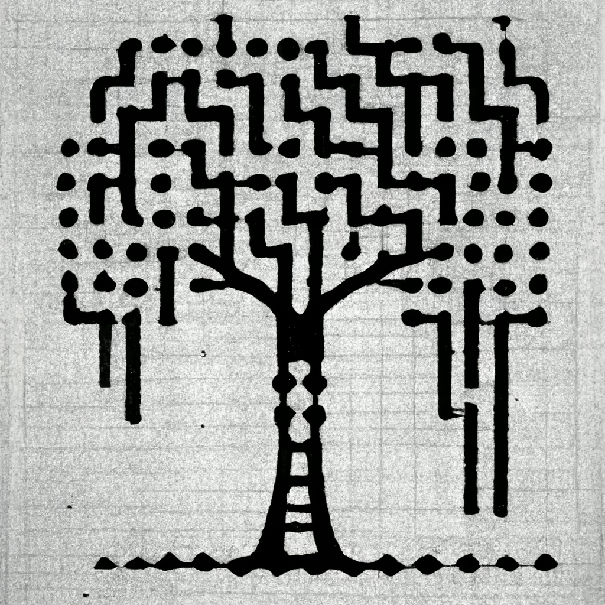

5. ”ÁRVORE+MÁQUINA”
Conceitualmente, o projeto de exposição S.E.E.D - Capítulo 1: Hipótese do Bioma Paralelo" parte da germinação de um ser/sistema híbrido orgânico-inorgânico: a convergência da "tecnologia-árvore" e da "tecnologia-máquina", ambas os modos de produzir formas de pensamento e vida imbricadas no mesmo ser, conjugadas no mesmo corpo, ressoando o movimento confluente que dá início ao coletivo S.E.E.D. como uma nova forma de vida coletiva, bem como os nossos desejos para esta exposição. Tal hibridização de sistemas constitui a interface de pensamento comum que alimenta as inquietações de S.E.E.D., materializadas no coração da exposição de forma abstrata e concreta.
Emergindo no centro do espaço da exposição, o ser híbrido "Árvore+Máquina" é composto por uma árvore viva, a qual componentes mecânicos são acoplados, como fios, cabos e peças plásticas/metal, adentrando suas raízes, seiva, tronco, galhos, copa, atribuindo outras materialidades, funcionalidades e escalas ao estatuto “orgânico” do corpo da árvore. Esse ser híbrido tem a extensão de suas raízes alongadas por essas próteses orgânicas-inorgânicas, infiltrando-se nas outras ambientações que compõem o percurso expositivo. As raízes/fios perpassam o território dessas ambientações como os tecidos de uma planta que se contorce avidamente em busca de nutrientes em solos profundos, ou até mesmo como vasos sanguíneos que irrigam tais domínios com a vitalidade das ideias, criando conexões de sentido com o espaço escultórico da exposição e com as obras de arte que integram a experiência em cada um dos ambientes e do todo.
Assim é deflagrada a organização de um sistema simpoiético, uma confabulação em que todas as suas partes componentes investigam incessantemente como combinar equilíbrio e caos vez pós vez. Isso também não descreveria a experiência de conceber coletivamente uma experiência expositiva? Não é assim que funciona a criação artística?
A instalação “Árvore+Máquina” é realizada por S.E.E.D. em colaboração com o artista multimídia e programador de São Paulo, Gustavo Milward.